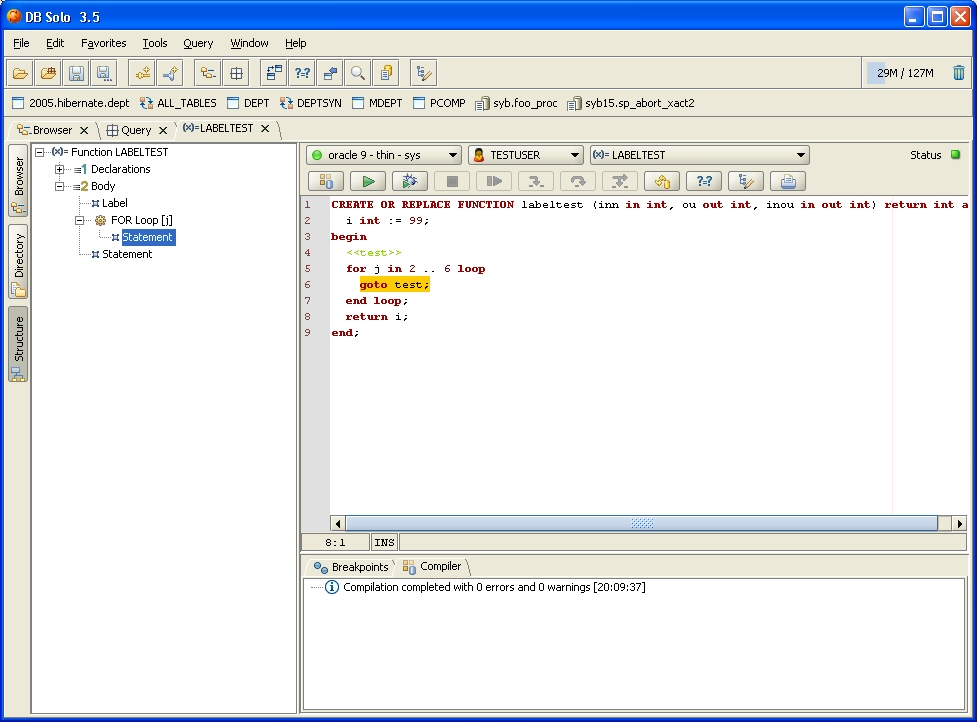
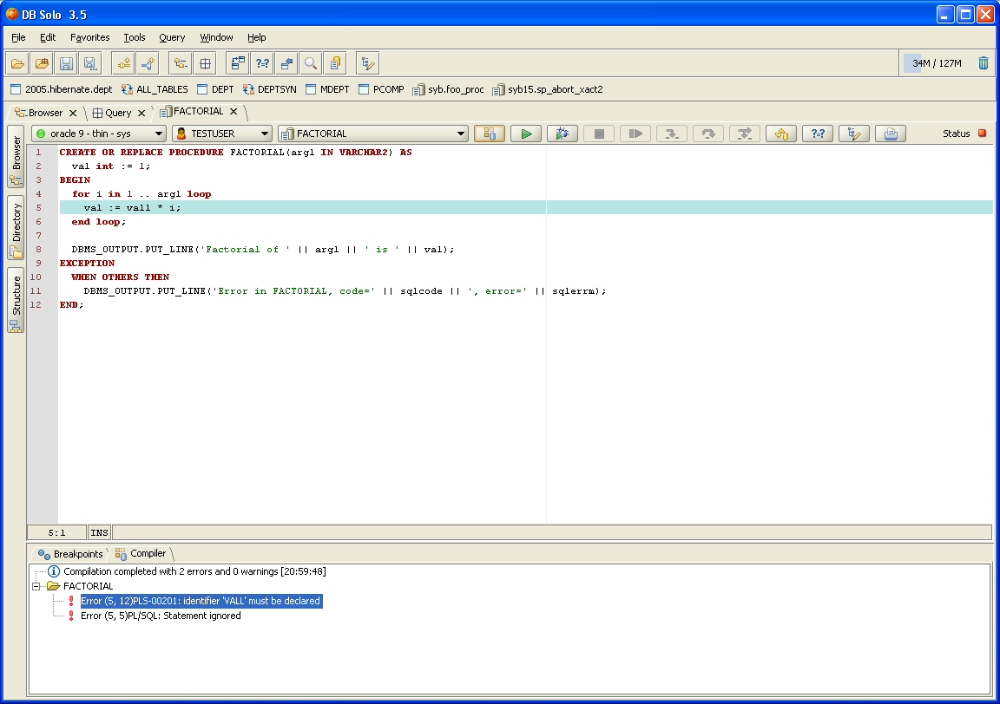
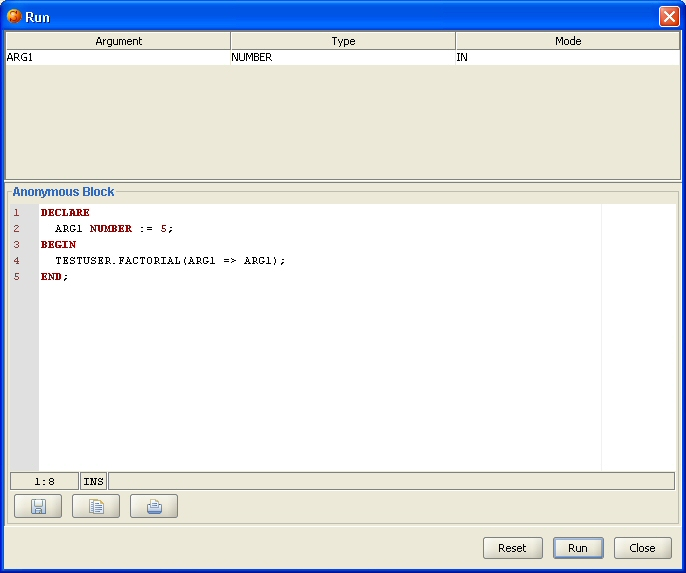
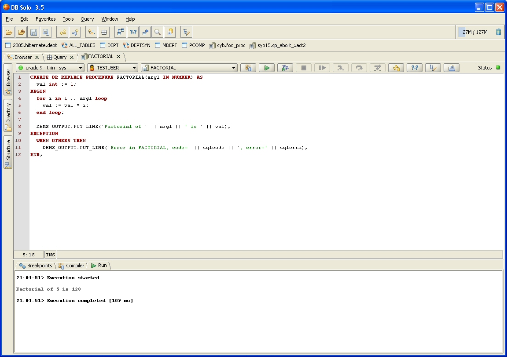
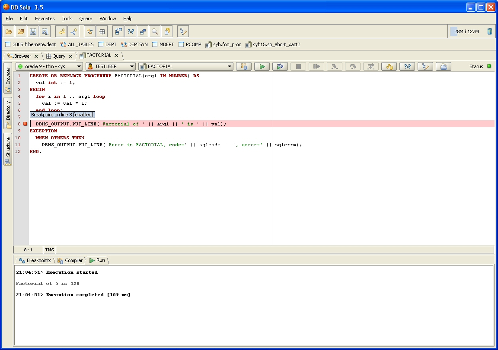
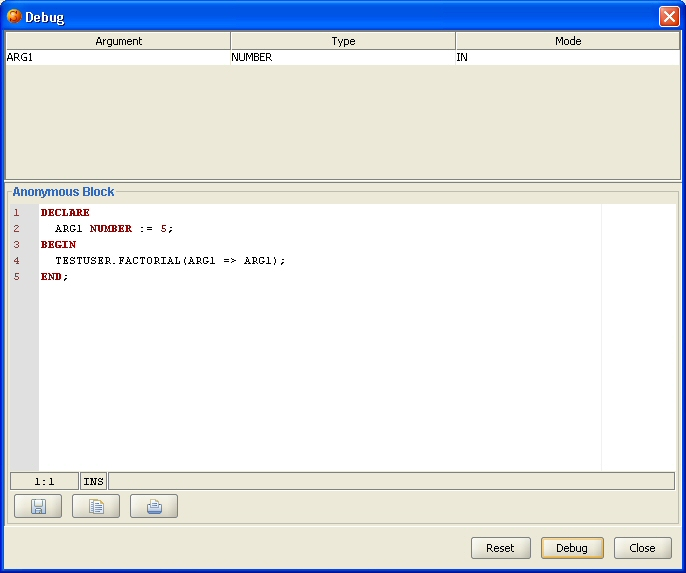
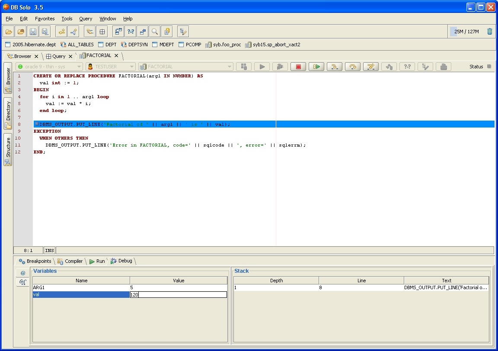
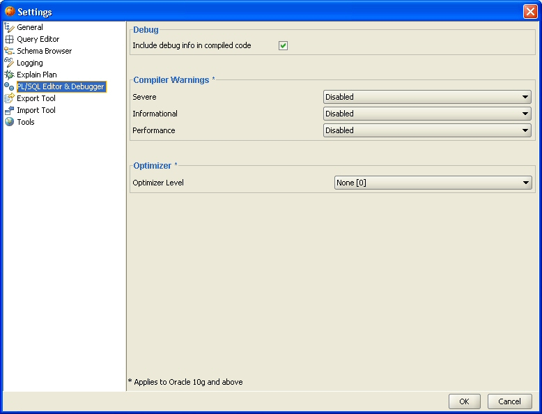
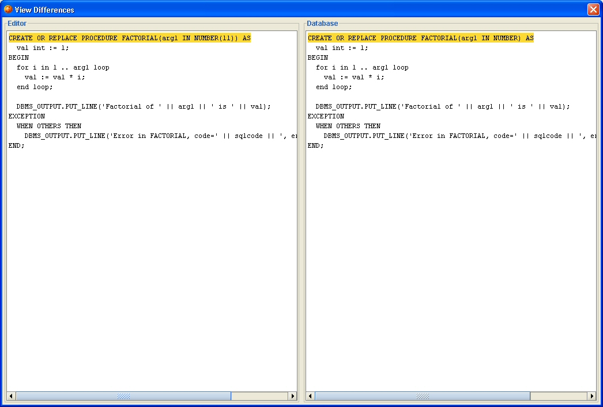

The Oracle Procedure Editor and Debugger allows you to view, edit, compile, run and debug Oracle stored procedures, functions, triggers and packages. It is supports all Oracle versions starting from 8.1.7. It also supports all platforms that DB Solo runs on; Windows, Linux and MacOS.
To start the procedure editor, navigate to the function/procedure/package in the schema browser, select the 'Source Code' tab and click on the 'Edit In Procedure Editor' button. Alternatively, you can right-click on the procedure in the schema browser and select 'Edit In Procedure Editor'. At this point a new procedure editor tab will be opened for the procedure you selected.
The left side of the procedure editor has three buttons that will show a mini-panel when selected. The Browser and Directory panels work the same way as in the query window, but the Structure panel is specific to the Oracle procedure editor. When the panel is visible, it will show the structure of the procedure in a tree-like format. This allows you to quickly navigate to a different part of the program and also to quickly view the overall structure of the panel. When you move the mouse cursor over a section in the tree control, the section will be highlighted in the editor. The procedure editor has its own toolbar that allows you to perform various operations on the selected procedure. It also allows you to select a different procedure to edit. The procedure can be under a different server or schema within the same server. The toolbar has the following buttons

To compile the procedure using the latest code in the editor, click on the Compile-button in the toolbar. The bottom of the screen will show the results of the compilation in a tab named 'Compiler'. In case of errors, the errors will be listed in this tab including the line numbers and Oracle error codes. When you select an error from the list of errors, the corresponding line will be highlighted in the source editor. The first error will be selected automatically. The screen shot below shows an example where a variable name has been misspelled. This will result in PLS-00201 (Identifier must be declared) error and the error line has also been highlighted.

After compiling the code successfully, you can run the program unit. To do so, click on the 'Run' button in the toolbar. This will bring up the Run-dialog that will contain an anonymous PL/SQL block that will be executed when you click on 'Run'. PL/SQL code will be automatically generated to declare the required variables and call the procedure/function correctly. Notice that you can modify the generated code, e.g. to change the values that will be passed into your program unit. The modified code will be automatically persisted for further executions. To revert back to the automatically-generated block, click on the 'Reset' button. To close the dialog without running the procedure, click on the 'Close' button.

When the program unit is running, you can stop the execution by clicking on the 'Stop' button in the toolbar. After the procedure has been executed, you will see the execution results in the 'Run' tab at the bottom of the screen. Output from the DBMS_OUTPUT package, if any, will also be shown in this tab.

To debug procedures and functions, start by setting breakpoints in the program unit you are debugging. This is done by clicking on the left side of the editor where the line numbers are shown. Once a breakpoint has been set, it is shown as a red square next to the line number and the line is highlighted in the editor. By default the breakpoint is enabled, you can disable it by unchecking the corresponding checkbox at the bottom of the screen. Disabled breakpoints are indicated by a yellow square. You can remove breakpoints by clicking on the red square in the margin.

After adding the breakpoints in your program unit, you can click on the 'Debug' button in the toolbar. This will bring up the debug dialog that works the same way as the run dialog. Using the editor in the dialog you can change the default parameter values and add DBMS_OUTPUT calls to print out return values. The modified call template will be persisted so that you don't need to do the same modifications again. To revert back to the default call template, click on the 'Reset' button. To start the debugger, click on the 'Debug' button.

Once the debugger reaches a breakpoint it will stop the program execution and the line where a breakpoint was reached is highlighted in the editor. The bottom of the screen will show the variable values under the 'Debug' tab. . The right side of the bottom tab shows the stack of the debugged program. You can control the debugger using the standard resume, step into, step over and step out buttons. You can also change the values of the variables at the bottom of the screen by double-clicking on the value and entering a new value. Currently only numeric and string values are supported.

To change the default compiler settings, click on the 'Settings' button in the toolbar. This will bring up the settings dialog with the 'PL/SQL Editor & Debugger' section selected. The 'Include debug info in compiled code' option will instruct the compiler to add debug information in the compiled code so that the debugger can be used. Notice that if you unselect this option, you cannot debug the program units you have compiled since changing the setting. The 'Compiler Warnings' section only applies to Oracle 10g and later versions. It allows you to change the way Severe/Informational/Performance warnings are treated by the compiler using the PLSQL_WARNINGS compiler flag. The warnings in each of the three categories can be either disabled, enabled or treated as errors. The 'Optimizer Level' option also only applies to Oracle 10g and later versions. This setting will instruct the compiler how much it should optimize the compiled code by using the PLSQL_OPTIMIZE_LEVEL compiler flag.

The 'Compare' button in the toolbar allows you to compare the source code in the editor and the code in the database. This is useful if you don't remember what exactly you modified and don't want to compile before you know for sure. When the button is clicked, a new dialog will be show that shows the code in the editor on the left and the code in the database on the right. All lines that are different/added/removed will be highlighted.

| Back to Index |
DB Solo www.dbsolo.com support@dbsolo.com |